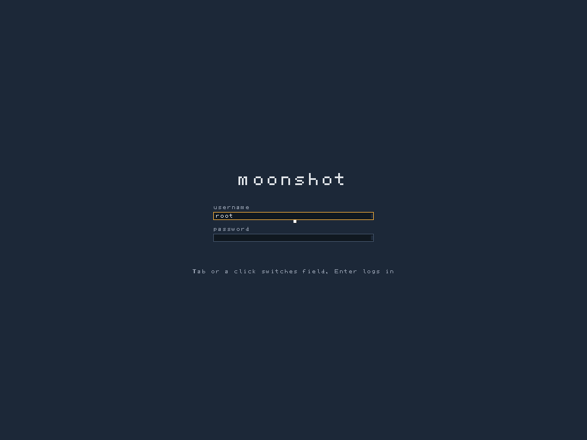

raket
raket is what stands between boot finishing and anything being usable. with
windows, boot ends on a login screen that covers everything, a username and a password, where only a correct pair shows the windows. the accounts are root and guest on a fresh boot, so passwd and adduser in the
shell change that.

logging in
the login screen is the first thing drawn after the kernel's own checks, so nothing of the windows behind it is ever seen. enter goes from the username to the password and then logs in. tab, the up and down arrows or a click move between the two. the password shows as dots. a wrong pair gets a red line and does not say whether the user exists. an account with no password logs in on an empty one.
the first login assigns that user to the shell windows. each split inherits its initiating session and a program-created shell inherits the program identity. replacing the last window preserves its principal instead of borrowing the screen owner. the first login opens hylla on the right of the shell. alt-l locks the screen. everything keeps running behind it but nothing is shown, while only the same user's password opens it again. users are kept apart only for the length of one boot. the person at the keyboard can use every open window, root's included, so lock the screen with alt-l before leaving it.
without windows, on the plain text screen, each session asks for a login at its
own prompt instead. password characters echo as *.
login in the shell changes the user of one session.